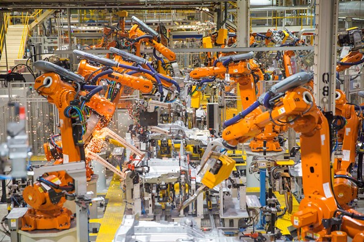
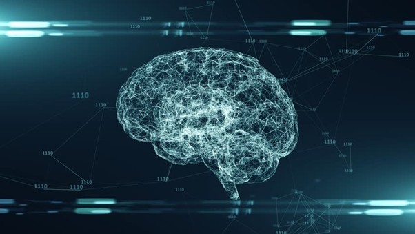

Generative AI and the UN SDG 9
The United Nations Sustainable development goals are set out as a call to action, it can help us create a better and more sustainable world by 2030. The main calls are 1. End poverty and hunger, 2. Protect the planet, 3. Ensure prosperity and peace for all. There are 17 goals, and I will be focusing on the use of AI on goal no 9. Artificial Intelligence plays a crucial role in advancing the sustainable development goal 9 by enhancing industrial efficiency, enabling smart infrastructure, and fostering innovation, though it also poses ethical and economic challenges. (UN, 2025) I believe AI can be used in a number of ways to help humanity as a whole and promote the aims of the United Nations.
AI can have a huge impact on industrial manufacturing from developing power efficient and increase material efficiency, this will lower build cost and lower the impact on the environment. They can use AI for predictive maintenance to ensure minimal downtime on critical structures. Oracle say that using predictive maintenance can boost factory uptime by 15% (Jackley, 2025) it can also save a company money by replacing physical workers also by keeping systems up for longer can ensure that less material is wasted due to faults with the manufacturing process. There also some negatives that come along with this, Possibly job loss for roles that are being replaced with AI, could be a quite high cost to set up and get running the AI systems, also not all countries have the same access to AI technology as 1st world countries meaning it would be harder and more expensive to implement. But I do believe that mass implementation of AI will allow organisations to produce more products reduce3 waste and system downtimes with predictive maintenance. One of the worst things for an organisation is when you are unable to fulfil orders, machine downtime makes you unable to fulfil orders so reducing this will increase your customers trust that when they place an order that they will get there product in a timely manner without complications.
AI can be used to used to build more resilent and smart infrastructure for example smart cites that is cites that are build with AI infrastructure in mind and use systems like intelligent transport systems that use AI to manage traffic by adapting speed limits and traffic lights and busses that dock themselves, accidents prevented before they occur this infrastructure could speed up our daily life and save us money time and keep us safer (ITS, 2025). AI can also be used to achieve a truly cyber secure power grid as the PowerGrid of one of our most vital systems as almost everything relies on it and it is venerably to cyber attacks which can cause lots of damage and downtime so by using AI to make it more secure and reducing blackouts and brownouts why can damage the physical infrastructure that the grid runs and relies on to stay functional It can also help with planning and helping to implement a 100% clean energy system by 2035 (NREL, 2025). Ensuring grid stability is vital as it one of the most vital systems we have it keeps our devices and the economy running.

A good case to look at is how ai is uased within the guatamala sugar industry it helps them to harvest more efficiently and predict crop yields better it also helps them to reduce waste and energy consumption by optimising the production process (Mahadi, 2020).
AI can be extremely effective at not just improving the systems that we already have in place but also helping us to innovate and build new systems one of the reason it is so great is not is specificity to one filed but how widely it can be applied it can also make less bias decisions as sometimes if you are looking for something true. Some worry that AI will replace human inventors but I don't feel this is the case as AI is better being more of an assistant as it allows them to focus and save time and make less bias decisions (MIT, 2025). AI can also be vital in creating digital inclusivity in developing countries.

One main consideration with AI is the ethical impact from bias and discrimination which is caused as AI is trained on mass data sets and within that data there is slight societal biases and this can lead to them being trained into the data sets, transparency and accountability, AI is in what is called a black box which is where we cant see how it runs or what it is trained on and this means we are blindly trusting it without really knowing it works, social manipulation and misinformation this links back into not knowing what biases are on the data , privacy and security One big concern is that AI is trained on big volumes of personal data for example in China everyone’s face is used in the large AI surveillance network that they have in place , job displacement this is the fear that AI will take over less specialised roles and increase the already large amount of unemployed people.